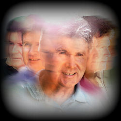
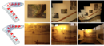
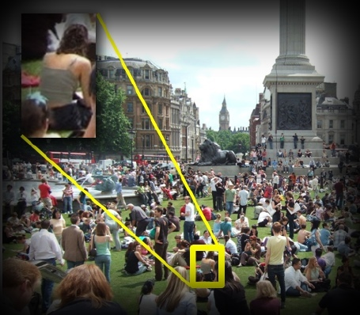
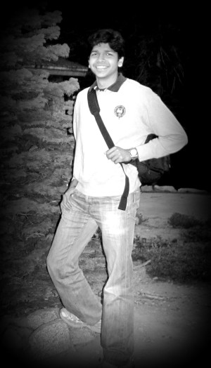

I am a Research Scientist at Google Research.
Previously, I was a Research Engineer at Flutter, a startup based in San Francisco building gesture recognition systems, which was acquired by Google.
I graduated in 2012 with a Ph.D. in Computer Science and Engineering from University of Washington. Here's a copy of my thesis.
I was advised by Prof.
Steven M.
Seitz.
In past life, I spent
four wonderful years
at IIT
Delhi where I got my Bachelors
degree in Computer Science and Engineering.
Click here
for my CV.
email: [my first name]@cs.washington.edu
An (incomplete) summary of my class projects can be found here.
Projects:
|  |
Moving Portraits.
Ira
Kemelmacher-Shlizerman,
Eli Shechtman,
Rahul Garg and
Steven M. Seitz.
Communications of the ACM, Research Highlights (Cover Story), Sept 2014. [Full text]
|
|  |
Dynamic Mosaics.
Rahul Garg and
Steven M. Seitz. In Proc. of 3DimPVT 2012, Zürich, Switzerland. [pdf, video]
|
|
Exploring Photobios.
Ira
Kemelmacher-Shlizerman,
Eli Shechtman,
Rahul Garg and
Steven M. Seitz.
In Proceedings of SIGGRAPH 2011, Vancouver, BC. [paper, website, video, press]
|
|  |
Where's Waldo: Matching People in Images of Crowds.
Rahul Garg, Deva Ramanan, Steven
M. Seitz, and Noah
Snavely. In Proceedings of IEEE Conference on Computer Vision and Pattern Recognition (CVPR), 2011. [pdf, website]
|
|
Implemented
the 'Face Movie'
feature released as a part of Picasa 3.8.
It creates smooth face-aligned movies from personal photo collections
by aligning faces based on pose and expression. This was done during a
6 month internship at Google Seattle during Spring-Summer 2010 working
with Steve
Seitz and Ira
Kemelmacher-Shlizerman. |
|
The Dimensionality
of Scene Appearance.
Rahul Garg, Hao
Du, Steven
M. Seitz, and Noah
Snavely. Proceedings of IEEE Conference on Computer Vision (ICCV),
Kyoto, Japan, 2009 [pdf,
website,
poster] |
|
Finding Paths
Through the World's Photos.
Noah
Snavely, Rahul Garg, Steven
M. Seitz,
Richard
Szeliski. Proceedings of
SIGGRAPH 2008, Los Angeles, CA [pdf,
website,
video]
|
|
Locally Invariant Fractal
Features for Statistical Texture Classification.
Manik
Varma, Rahul Garg. Proceedings
of IEEE Conference on Computer Vision (ICCV), Rio De Janeiro, Brazil,
2007 [pdf] |
|
 |